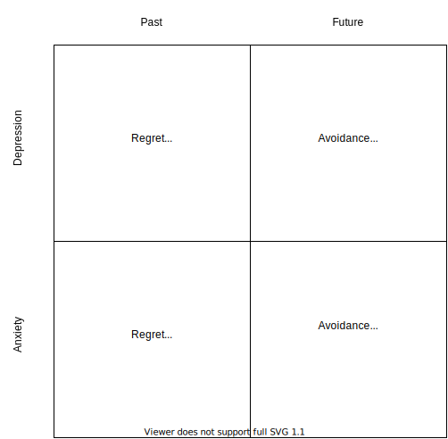

Mood Mailaise Milking Mania
thoughts
In the bucket of modern’s medicine’s insights that are insufficiently comforting, the monoamine-based hypotheses of mood and behavioral disorders are amongst the most abundantly regurgitated and poorly formulated. As the reductive version goes, less or more [arbitrary monoamine] in some brain region translates to some defect or deviation from a “normal” lurking somewhere in the latest DSM. But speak to your psychiatrist about the specific reasons why you’re prescribed an NDRI (Bupropion) over an SSRI (Escitalopram), and you’re likely to be offered some bland juxtaposition of side effects – at best. I assure you that you will be deprived of any sufficiently elaborate justifications. Your complacency is an a priori assumption, and what the hell were you thinking, anyway? Your questioning of professional judgment would a shunnable case of you stepping out of your lane.
The pursuit of mental health isn’t worth overclocking your doc’s likely underutilized, algorithmically-prescribing brain with questions about your trip to the pharmacy. Consider this post a part of your independent homework on the nature of your disorder. Aside from mass-prescribed monoamine reuptake inhibitors that dramatically rattle your neurochemistry, the harder pill to swallow is that monoamine-based hypotheses comprise a fundamentally losing game for those afflicted with depressive disorders, just as for those who diagnose them. For a disease-explanatory framework so rife with contradictions and counterevidence, its role as a compass in psychiatric decision-making is quite eyebdrow-elevating. Consider this brief list of clinical depression-centric conundrums, which we are all guilty of not being familiar enough with:
- In a “non-depressed” sample, depletion of monoamines such as serotonin and norepinephrine did not trigger a depressive episode.[1][2]
- Excess serotonin may trigger symptoms of depression. [3]
- Fenfluramine, a potent serotonin releasing agent, can cause dysphoria, lethargy, fatigue and sedation. SSRIs can, too, in some individuals.
- A number of efficacious antidepressants do not act through the monoamine system.
- Ketamine, Tianeptine, Igmesine, Opipramol, Dextromethorphan – the list is long.
- Although “remission” lacks a universally accepted definition in the context of depressive disorders, we now know of some abysmal remission rates, post-SSRI treatment. [4]
- SSRIs and SNRIs are notorious for their unfortunate propensity for kickstarting suicidal ideation – an inconsequential quirk conveniently deemphasized by the front runners of the S(S/N)SRI market. Waving at our friends at Eli Lilly in prose. The “pro” in Prozac is yet to be justified.
- Catecholamine-juggling antidepressants, such as Bupropion and Amineptine, tend to be anxiogenic and tensely stimulative (Bupropion) or psychologically addictive (Amineptine).
Even if all or most of the above were propped by low statistical significance, poor experimental design and low sample sizes, exactly how effective the pills are at dialing one back to the poorly defined “normal”, and for how long – these are questions pulled straight out of the rulebook of that aforementioned losing game. Prodding at the game itself is a message more worhty of distribution. Based upon countless interactions with those who were sold on the neurochemical bandaid theory, prescibers and patients alike, I have distilled a generalized set of confidently stated assumptions, sonorously reverbating from a seemingly wilfully ignorant crowd. Let us briefly indugle in appreciating the derranged nature of this emergent belief system.
Depression and Anxiety
“Depression and anxiety are endogenous phenomena. Our attribution of endogenousness to these sets of phenomena has nothing to do with the slow-burning sensationalism of some fairly recent discoveries, including but not limited to MAOIs, Prozac™, and beyond. Even an instance of a destabilizing event in one’s life precipitating a depressive episode (which would raise the possibility of exogenousness to a less rigidly convinced observer) is a testimony to the human brain’s pathetic frailty and indisposition to self-regulation. The answer to this neural design flaw we all bear the cross of, is medicine, naturally. Medicine, the precise pharmacodynamics of which are partially not understood, and partially come on the back of copious sliced-up rodent brains. This kind of medicine surely will (eventually) shake that neuro-snowglobe into perfect homeostastis, given just enough refills and a dosage titrations."
Attention Deficit Hyperactivity Disorder
“Children who fail to avoid bumping into the walls of institutional rules and regulations, may qualify for a life-long course of neurotransmitter alteration that can begin as early as 6 years of age, as per the Adderall™ package insert. Egregious violations of conduct, such as getting up from one’s chair at unprescribed times or and having a difficult-to-tame demeanor, are signs of a wildly undiagnosed disorder, and not general developmental chaos that may subside with the expansion of white matter."
Binge Eating Disorder
“Upon discontinuation of the prescribed medication, the symptoms return. But hey, was it all not enjoyable and worthwhile, while it lasted?"
Here’s the uncomfortable deal, boys and girls. If all of the snarky verbose rambling isn’t having the intended eyebrow-elevating effect, 
there are still two glaring (in my opinion) problems emergent from one pregnant question: “And then what?”. Namely, there are two questions, each followed by the not particularly eruditely worded aforementione one:
and get your hundreds of dollars' worth (if you live in the U.S.), consider mentioning the alternative namedropped in the title of this post. If your doc is dealthy terrified of controlled substances, or has an uncalibrated sixth sense for drug abuse potential in a patient – forget it.